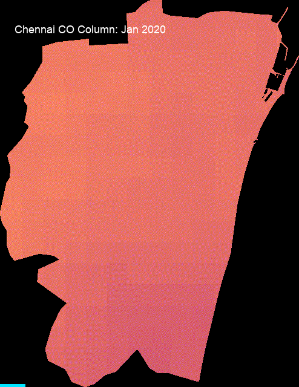

Spatial assessment of Sentinel-5P tropospheric CO column density and elderly (65+) residential exposure in the top quartile.

Figure 1: Monthly mean tropospheric CO column density across Chennai in 2020 (Sentinel-5P OFFL, scale: 0.025 to 0.045 mol/m²).
Explore the spatial distribution of 2020 annual mean CO, the highest-CO quartile boundary, and the resident elderly demographic.
Map layers include: 2020 Annual Mean CO Column (mol/m²), Highest-CO Quartile Area Mask (≥ 75th percentile), and Exposed 65+ Population Density.
| Indicator | Value | Unit |
|---|---|---|
| City-wide Mean CO Column (2020) | 0.039115 | mol/m² |
| 75th Percentile CO Threshold (Highest Quartile) | 0.039309 | mol/m² |
| Total City Administrative Area | 195.88 | km² |
| Area in Highest-CO Quartile | 49.95 | km² |
| Share of City Area in Highest-CO Zone | 25.50 | % |
| Total Estimated City Population (2020) | 3,914,793 | persons |
| Total Elderly Population (Age 65+) | 286,997 | persons |
| Elderly Share of Total City Population | 7.33 | % |
| Elderly (65+) Residing in Highest-CO Quartile | 79,662 | persons |
| Share of 65+ Population in Highest-CO Zone | 27.76 | % |
| Share of Total Population in Highest-CO Zone | 27.77 | % |
The 2020 annual mean Sentinel-5P tropospheric carbon monoxide (CO) column density across Chennai averages 0.039115 mol/m², with the upper quartile (75th percentile) boundary established at 0.039309 mol/m². Areas falling in this top quartile span 49.95 km², or 25.50% of the administrative district.
Spatially, the highest CO column burdens are clustered over the northern and north-western industrial belts (Ennore, Manali, and Thiruvottiyur) and major inland freight transit corridors. These sectors host thermal energy generation facilities, petrochemical refineries, fertilizer plants, and heavy diesel freight servicing the ports. In contrast, eastern coastal sectors exhibit lower column densities due to persistent maritime boundary layer circulation and sea-breeze dispersion into the Bay of Bengal.
The monthly dynamic sequence illustrates marked seasonal shifts across 2020:
According to WorldPop 2020 age-sex estimates, residents aged 65 and above account for 286,997 individuals (7.33% of the city total). Among them, 79,662 elderly individuals reside within the city's highest-CO quartile zone, representing an exposure share of 27.76%.
The exposure share of the elderly cohort (27.76%) closely parallels that of the total population (27.77%), both exceeding the pure spatial area share of 25.50%. This indicates that the upper quartile is not restricted to vacant industrial tracts, but overlaps dense residential wards. Given age-associated reductions in cardiopulmonary reserve and higher prevalence of chronic vascular conditions, older adults residing in these zones face amplified environmental health risks.